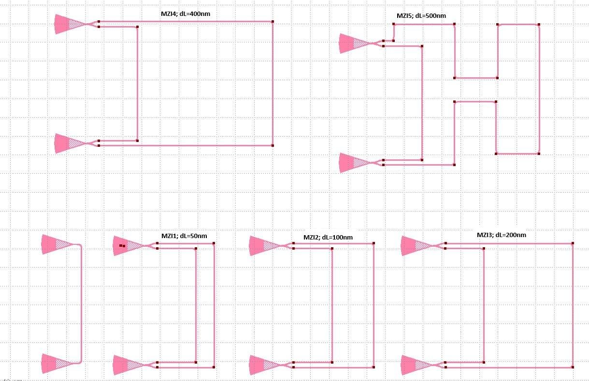
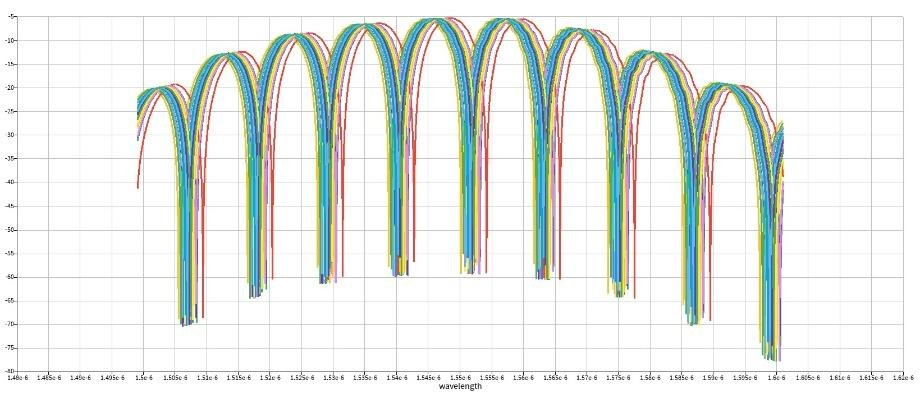

Photonic ICs · Course project (UBCx Phot1x) · Fabricated and measured
Unbalanced Mach–Zehnder interferometers on silicon-on-insulator
Five unbalanced MZIs with different arm-length differences (ΔL), designed to extract the waveguide group index from the free spectral range (FSR). I simulated the waveguides and circuits, laid out the devices, and compared my simulations with the measured spectra of the fabricated devices.

| Platform | Si strip waveguide, 220 nm thick |
|---|---|
| Polarisation | TE (fundamental mode) |
| Wavelength range | 1500–1600 nm |
| Path-length differences | 50, 100, 200, 300, 500 µm |
| Tools | Lumerical MODE · KLayout + SiEPIC EBeam PDK |
| Verification | SiEPIC Functional Layout Check |
| Fabrication | Electron-beam lithography, HSQ resist |
Method
I swept the fundamental TE mode from 1500 to 1600 nm in Lumerical MODE to get the effective and group indices, and fitted neff(λ) to a second-order compact model. The FSR of each MZI follows FSR = λ²/(ng·ΔL), so measuring the FSR of several ΔL values gives the group index of the fabricated waveguide.
| ΔL (µm) | 50 | 100 | 200 | 300 | 500 |
|---|---|---|---|---|---|
| FSR simulated (nm) | 11.719 | 5.793 | 2.909 | 1.988 | 1.127 |
| FSR measured (nm) | 11.325 | 5.670 | 2.855 | 1.905 | 1.130 |
| Difference | 3.5% | 2.2% | 1.9% | 4.4% | 0.3% |
| ng simulated | 4.100 | 4.220 | 4.129 | 4.028 | 4.263 |
| ng measured | 4.1611 | 4.1556 | 4.1265 | 4.1229 | 4.1703 |
The measured FSR agrees with simulation to within 4.4% for every device. Measured group indices come from fitting the measured transmission spectra.
Fabrication variability
Small changes in waveguide width and thickness shift the effective and group indices, so I ran corner analysis on the strip waveguide and a Monte Carlo simulation on the ΔL = 50 µm MZI.

| Corner analysis: neff | 2.355 – 2.506 |
|---|---|
| Corner analysis: ng | 4.125 – 4.245 |
| Monte Carlo FSR (ΔL = 50 µm) | mean 11.720 nm, σ 0.275 nm |
| Monte Carlo gain (ΔL = 50 µm) | mean −5.450 dB, σ 0.027 dB |
Full design report (PDF) UBCx certificate (PDF)
Devices fabricated at the University of Washington Nanofabrication Facility and Applied Nanotools, Inc., and measured at the University of British Columbia, as part of the UBCx Phot1x course (SiEPIC program).